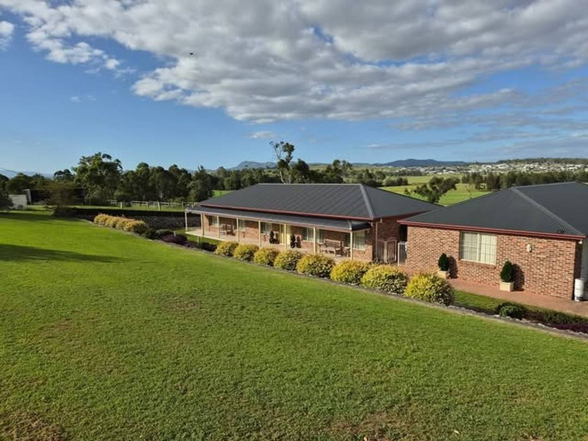
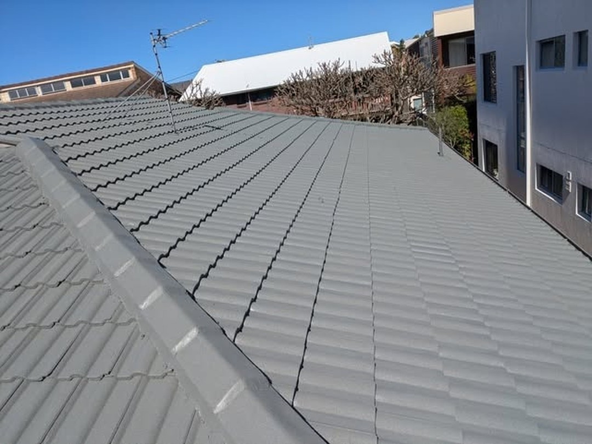

Roof restoration
Wash, seal and repaint tired tile and metal roofs — bringing them back instead of replacing them.
What we do
Every job starts with a wash-down, so the seal and the paint go onto clean, sound surfaces — the only way the finish holds up.
Wash, seal and repaint tired tile and metal roofs — bringing them back instead of replacing them.
Roofs repainted with top quality materials, applied the right way for a long-lasting finish.
Pressure washing that lifts years of grime off concrete and paved driveways.
Sealed and repainted driveways — even coverage and a surface that stands up to tyres and weather.
Homes, units and business premises — the same care on every roof and every driveway.
Straight-up quotes with the materials and process spelled out — no pressure, no surprises.
How it works
01
Tell us about the roof or driveway and we'll give you a straight-up quote — no obligation.
02
Full wash-down and any preparation the surface needs before anything goes on top.
03
Sealer and coatings applied with top quality materials, in the colour you choose.
04
We walk the job with you at the end — and only call it done when you're happy.
Recent work
A selection of jobs from our own gallery.







Why Fred's
You deal with the people doing the work — not a call centre, not a franchise.
Proper sealers and coatings — the finish you're paying for is the finish you get.
The whole property restored in one engagement — one crew, one standard.
From family homes to business premises, the same care goes into every job.

Where we work
Servicing homes and businesses across Newcastle and the surrounding region — roofs and driveways, washed, sealed and repainted.